Transfer-end detour
Land-side clear line + service bay
FALLBACK · Ordinary streets and transit
Five east–west stitches repair civic breaks created by Jingzhang's longitudinal infrastructure, while every AI device is confined to a removable side interface.
The five governance states are BASE, ADVICE, ACTIVE, FREEZE and RETURN. ADVICE changes information, not physical space, so the explorer demonstrates four physical states: BASE, ACTIVE, FREEZE and RETURN.
AI may dock only at side interfaces and may not occupy the public base. Five east–west stitches are verified segment by segment before entering the permanent civic network; AI services plug in later, withdraw and reset without interrupting verified public passage, staffed service or basic public rights.
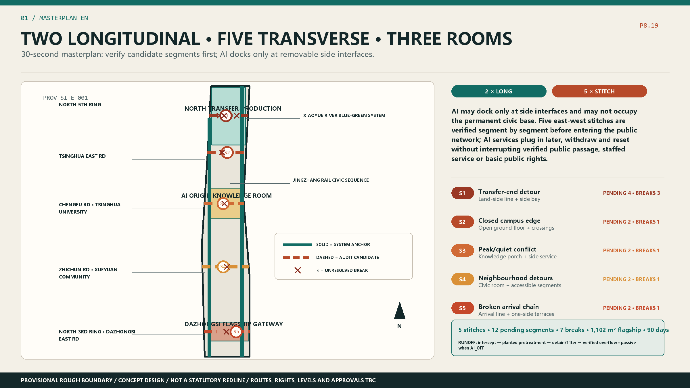
Provisional rough extent | competition concept | not existing, rights or approval | recompute when formal data arrives.
No fictional green axis: every stitch carries a problem, action, owner, fallback and phase.
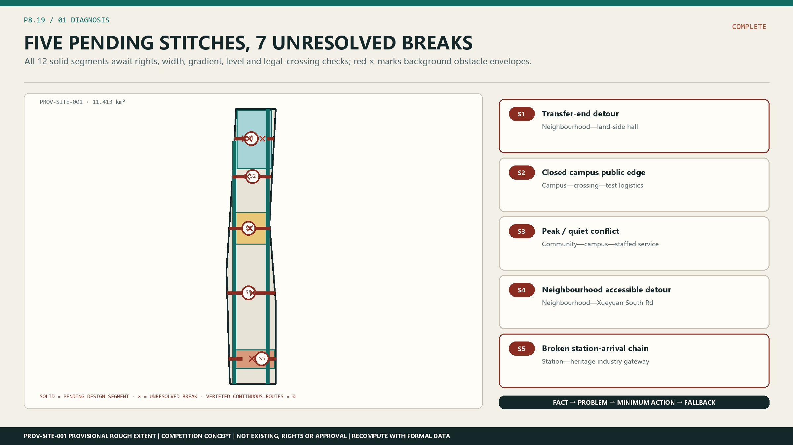
Land-side clear line + service bay
FALLBACK · Ordinary streets and transit
Open ground floor + staged crossings
FALLBACK · Existing approved entrances
Knowledge porch + side service
FALLBACK · Staffed point
Accessible cross-route + civic room
FALLBACK · Verified barrier bypass
Pending arrival segments + one-sided terrace
FALLBACK · Ordinary station passage
Active travel, passive stormwater and delivery gates share one spatial mechanism; failed waterside evidence retains the public base.
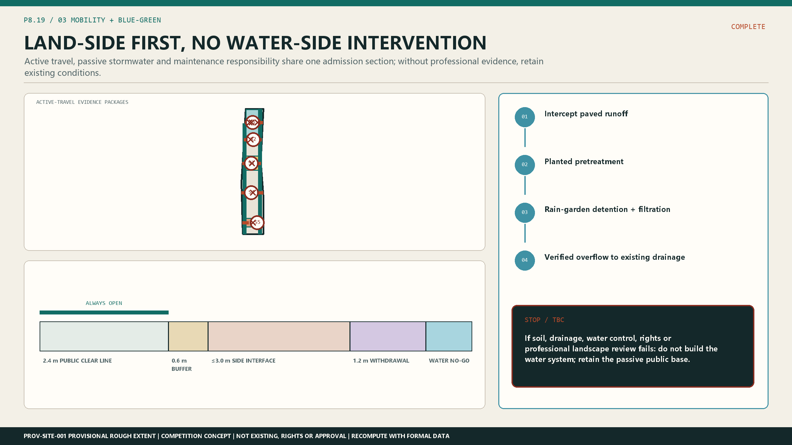
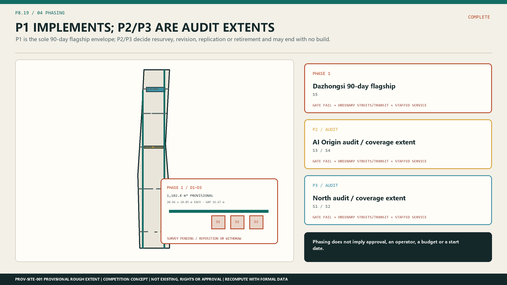
Choose a site to compare its failure, human role, physical component and complete journey.
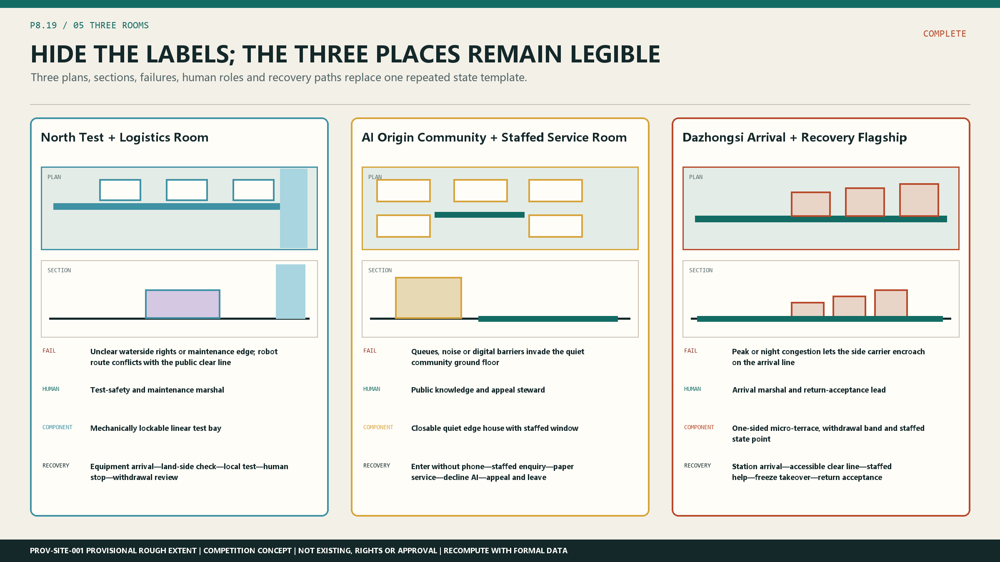
Failure · Unclear waterside rights or maintenance edge; robot route conflicts with the public clear line
Human · Test-safety and maintenance marshal
Component · Mechanically lockable linear test bay
Journey · Equipment arrival—land-side check—local test—human stop—withdrawal review
Failure · Queues, noise or digital barriers invade the quiet community ground floor
Human · Public knowledge and appeal steward
Component · Closable quiet edge house with staffed window
Journey · Enter without phone—staffed enquiry—paper service—decline AI—appeal and leave
Failure · Peak or night congestion lets the side carrier encroach on the arrival line
Human · Arrival marshal and return-acceptance lead
Component · One-sided micro-terrace, withdrawal band and staffed state point
Journey · Station arrival—accessible clear line—staffed help—freeze takeover—return acceptance
The sole flagship links interface control, provisional dimensions, states, roles, withdrawal and return acceptance in one evidence chain; D1–D3 remain survey-pending.
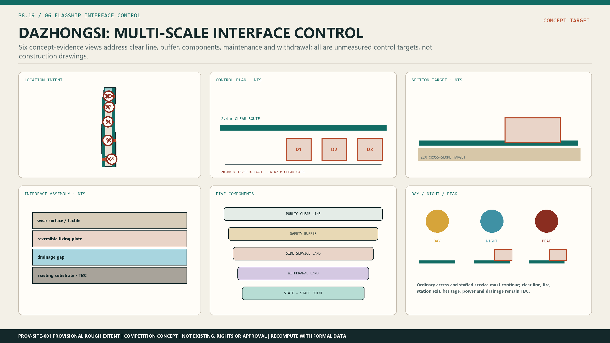
Choose a person and test entry, help, use, decline or failure, human takeover, and leave or appeal.
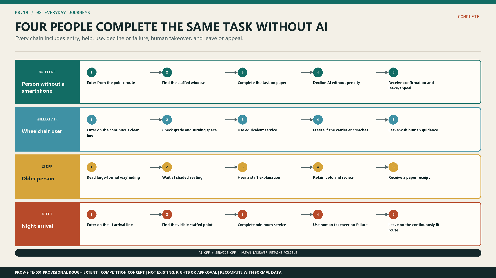
Days 0–30 baseline, 31–45 shadow advice, 46–60 limited activation, 61–75 freeze drill, 76–90 return acceptance.
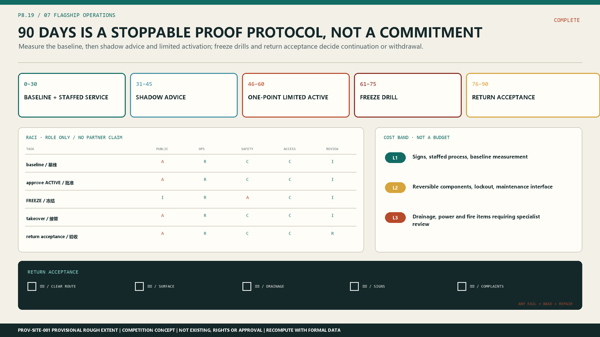
Six metrics invent no current values; each binds a non-AI baseline, window, stop threshold, recovery condition and responsible role.
11.413 km²
3.26%
0.26%
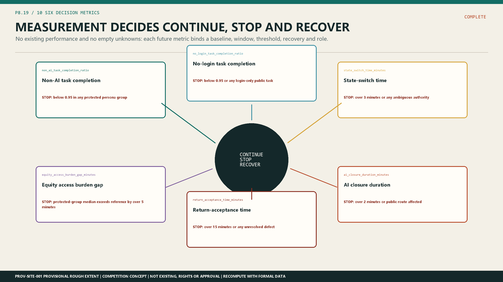
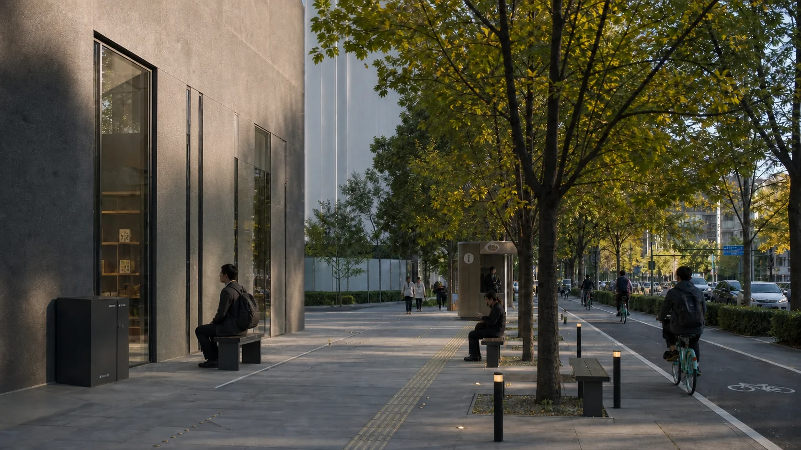
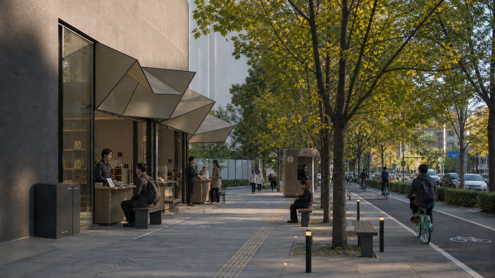
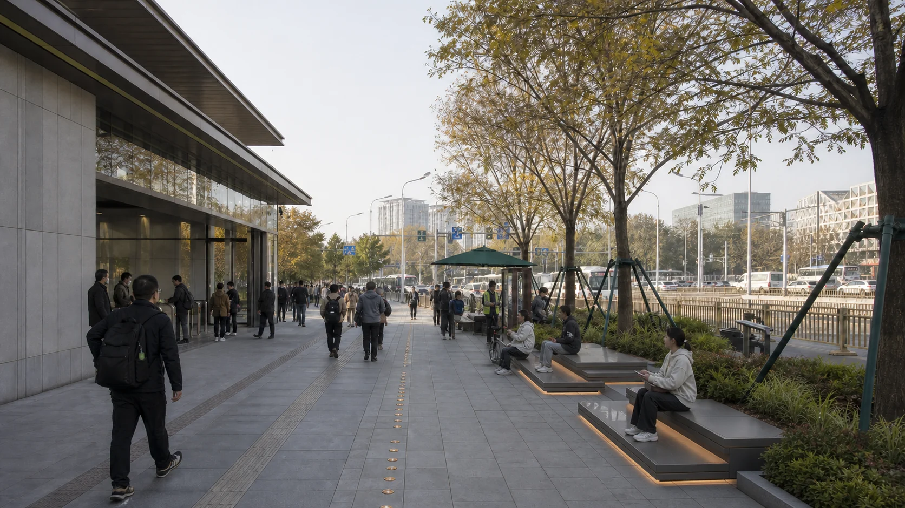
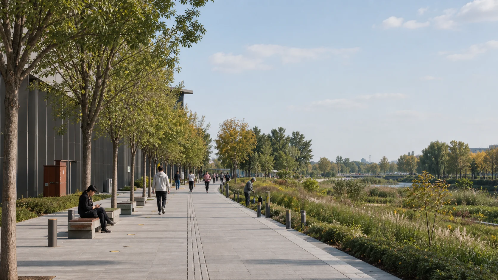
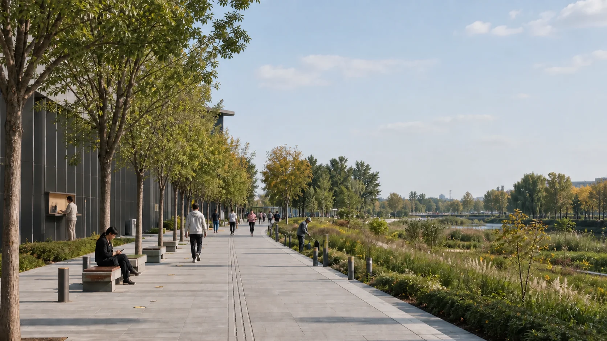
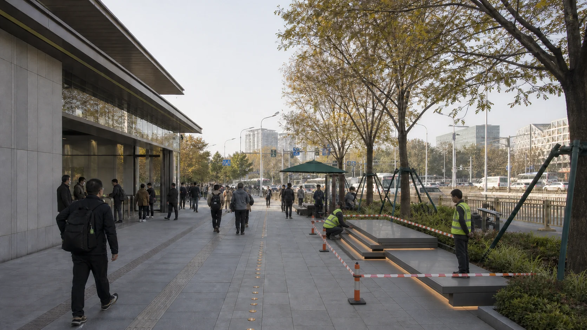
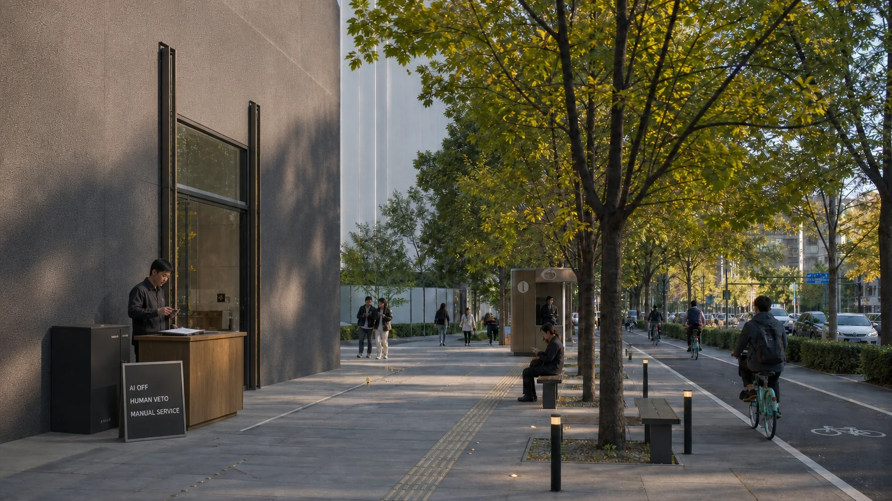
CONCEPTUAL / NOT EXISTING / NOT APPROVED · Atmosphere does not replace plans, sections, GeoJSON or professional review.